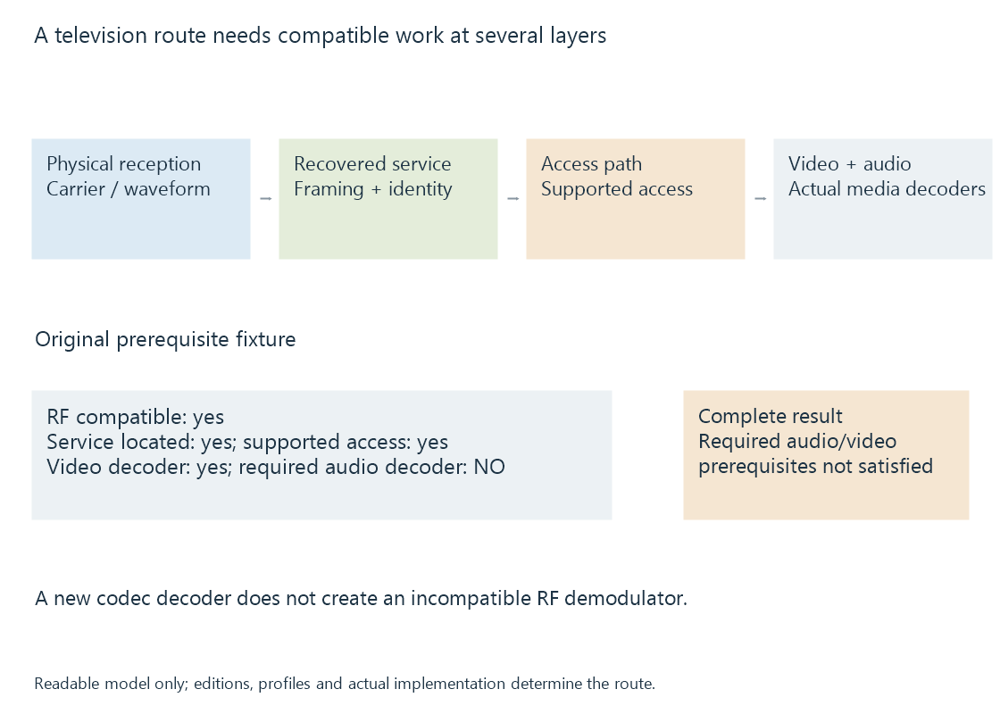

Digital television standards and compatibility layers
Digital television standards define interoperable transmission, transport, signaling and media relationships whose supported combination determines a receiving and playback route.
A digital television service crosses several compatibility layers. A broadcast-standard label often names a transmission arrangement, while the recovered service also needs transport/signaling, media decoding and any applicable access support.
This is why a tuner can recognize a signal without the complete Emby playback route working.
The layers perform different work
| Layer | Responsibility |
|---|---|
| RF transmission | How the receiver acquires symbols/data from the carrier |
| Framing and error protection | How data boundaries and correction relationships are established |
| Service transport/signaling | How the intended service and components are identified |
| Media coding | How pictures and audio are reconstructed |
| Access and presentation | How the implemented authorized route produces usable output |
The standard families place these responsibilities in different document structures. ATSC A/53 has distinct transmission, transport, video and audio parts. ATSC 3.0 has an explicitly layered suite. DVB has transmission, coding and service-information specifications.

A positive result at one layer is not the whole result
Use an original readable prerequisite model:
{
"rfCompatible": true,
"serviceLocated": true,
"accessPathAvailable": true,
"videoDecoderAvailable": true,
"audioDecoderAvailable": false
}
Under a model requiring all five conditions, the complete audio/video route fails despite compatible RF reception.
The object is not a native tuner query or captured Emby report. It illustrates separate conditions; a real system can expose a different set of stages and error messages.
The inverse distinction matters too. A media decoder supporting HEVC does not teach an RF frontend to demodulate an unfamiliar broadcast waveform.
Related standards need their own names
- ATSC 1.0 and ATSC 3.0 have fundamentally different reception/system arrangements.
- DVB-T and DVB-T2 describe terrestrial transmission generations.
- DVB-C, DVB-S and DVB-S2 address their defined cable/satellite arrangements.
- ISDB-T and DTMB define other terrestrial systems.
These links lead to the separate subjects. A generic “digital tuner” description cannot replace the actual supported delivery systems.
Regions and editions add context
Transmission standards can be used with regional media profiles and operational choices. An installed service’s codec, precision, audio and protection properties should therefore be established independently of a broad national or family label.
A newer specification edition also does not prove that an older device exposes every feature. The actual hardware/driver/backend implementation determines what reaches Emby.
Containers and codecs explains the corresponding distinction after acquisition: carrying a component in a supported transport is different from reconstructing that component’s media.
See Also
- ATSC 1.0 broadcast television
- ATSC 3.0 broadcast television
- DVB-T terrestrial television
- DVB-T2 terrestrial television
- ISDB-T terrestrial television
- DTMB terrestrial television
- Containers and Codecs